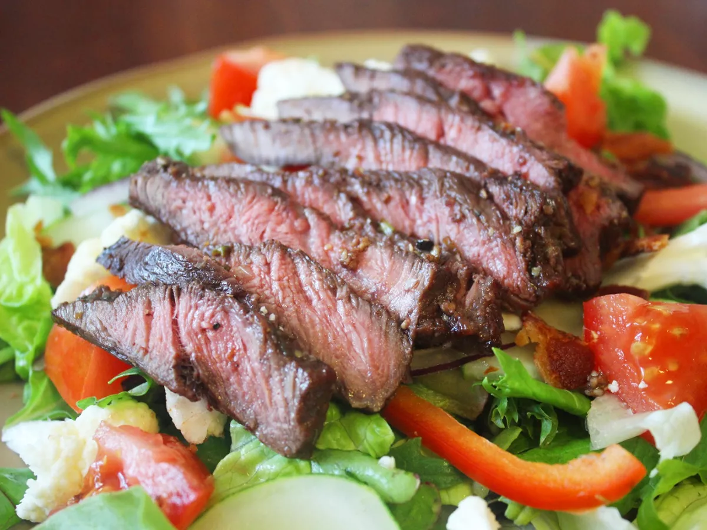

Spaghetti Carbonara
Go Back

Description:
Flat iron steak is cut from beef shoulder. To make a flat iron steak, butchers remove the connective tissue to separate the top shoulder blade into two cuts: One is the top blade, the other is the flat iron.
Flat iron steak is nicely marbled and is less expensive than other steaks, which makes it a popular choice among home cooks. When it's cooked correctly, flat iron steak is wonderfully tender and juicy.
Ingredients:
- 1 (2 pound) flat iron steak
- 2 ½ tablespoons olive oil
- 2 cloves garlic, minced
- 1 teaspoon chopped fresh parsley
- ¼ teaspoon chopped fresh rosemary
- ½ teaspoon chopped fresh chives
- ¼ cup Cabernet Sauvignon (or other dry red wine)
- ½ teaspoon salt
- ¾ teaspoon ground black pepper
- ¼ teaspoon dry mustard powder
Steps:
- Place steak inside a large resealable bag. Stir olive oil, garlic, parsley, rosemary, chives, red wine, salt, pepper, and mustard powder together in a small bowl.
- Pour marinade over steak in the bag. Press out as much air as you can and seal the bag. Marinate in the refrigerator for 2 to 3 hours.
- Heat a nonstick skillet over medium-high heat. Place steak in the hot skillet and discard any remaining marinade; sear and cook steak for 3 to 4 minutes on each side for medium rare, or to your desired degree of doneness. An instant-read thermometer inserted into the center should read 130 degrees F (54 degrees C) for medium rare.
- Allow steak to rest for about 5 minutes before serving.